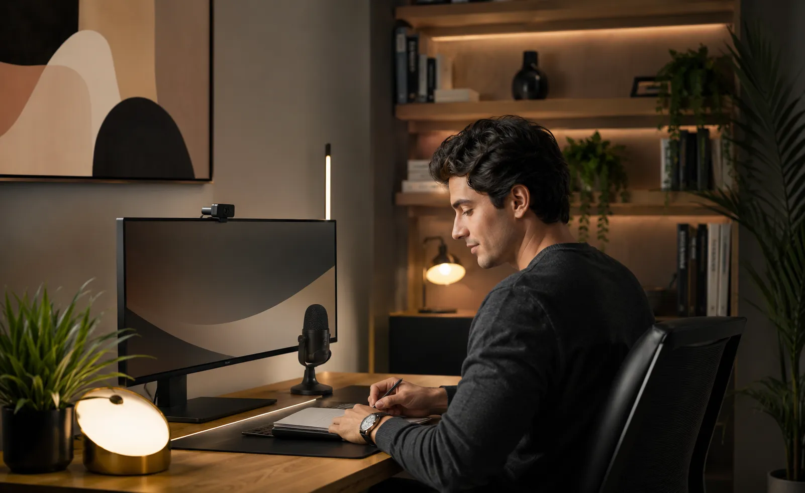
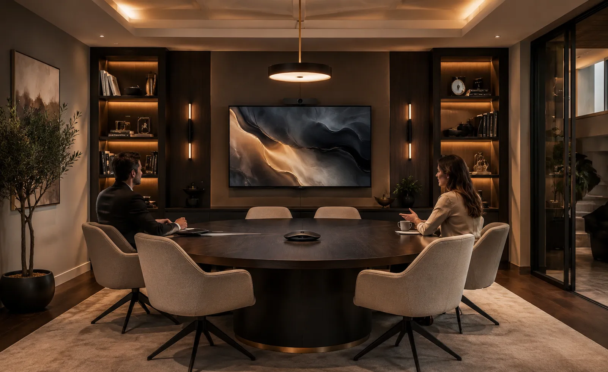
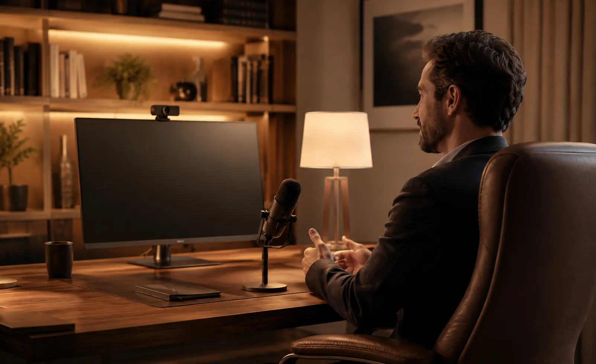
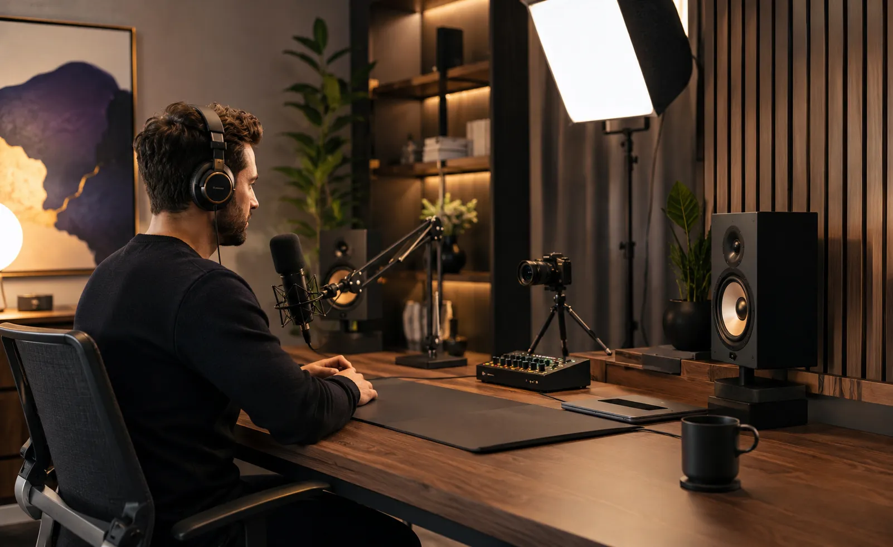
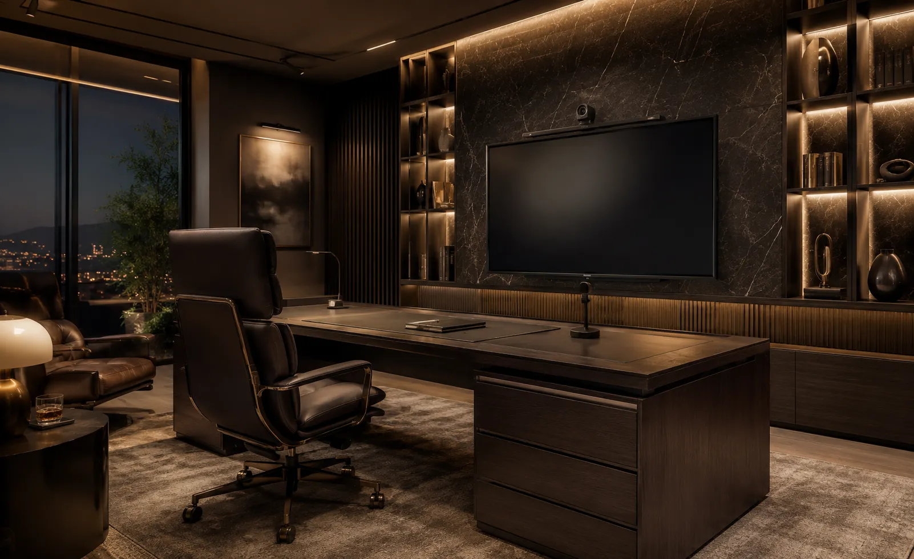

Home office premium con audio y video para videoconferencias claras.
Diseñamos e instalamos oficinas en casa con cámara, micrófono, audio,
iluminación, pantallas y conectividad para videoconferencias, juntas, consultorías y trabajo
remoto.
Analizamos medidas, posición de trabajo, iluminación, ruido, reverberación,
plataformas y equipo existente para integrar una solución limpia, cómoda y sencilla de usar.
Atendemos proyectos residenciales en Ciudad de México, Estado de México y otras ciudades de
México.
Tu oficina en casa debe ayudarte a verte, escucharte y trabajar mejor.
En una videoconferencia, la calidad de la voz, el encuadre, la iluminación y el fondo influyen en la claridad de la conversación. También importan la posición de la cámara, la distancia al micrófono, la altura de la pantalla y el ruido del cuarto.
Diseñamos el sistema alrededor de tu forma de trabajar y del equipo que ya utilizas. La meta es que puedas sentarte, conectarte y comenzar una reunión con audio claro, imagen consistente, cableado ordenado y una operación sencilla.
Presencia profesional
Audio, encuadre e iluminación pensados para reuniones, presentaciones y llamadas.
Menos fricción
Conexiones y cableado definidos para reducir adaptadores, desconexiones y ajustes repetitivos.
Mayor productividad
Pantalla, cámara y posición de trabajo organizadas para sesiones largas y uso cotidiano.
Integración estética
Cables ordenados, soportes adecuados y un espacio visualmente profesional.
La mayoría de los problemas en reuniones virtuales no son de conexión, sino de diseño del espacio.
Cámaras mal ubicadas, mala iluminación, audio con eco, cables sueltos y adaptadores improvisados distraen, cansan y afectan la imagen profesional. Trabajar todos los días así genera fatiga y fricción.
En un home office premium, cada elemento se piensa para que la comunicación fluya con naturalidad. La meta es resolver audio, video, iluminación y conectividad como un sistema integral.
Voz lejana o con eco
El micrófono de la computadora capta ruido de fondo, eco de la habitación y suena distante.
Mala iluminación
Sombras, contraluz de ventanas o iluminación cenital que fatiga la vista y desmejora el video.
Encuadre incómodo
La cámara de la laptop apunta desde abajo, creando un ángulo poco natural en llamadas.
Desorden de cables
Múltiples cables, cargadores y hubs sobre el escritorio reducen el enfoque y la estética.
Diseñamos tu oficina en casa como un entorno profesional de alta comunicación.
Evaluamos tu posición de trabajo, iluminación, acústica del cuarto y plataformas para seleccionar cámara, micrófono, monitores, audio y conectividad ideales.
Audio profesional
Micrófonos dedicados y monitoreo para que tu voz se escuche clara, cálida y sin eco.
Cámaras y óptica
Cámaras 4K o PTZ con enfoque preciso y ángulo a la altura de los ojos.
Iluminación difusa
Luces de temperatura regulable orientadas para eliminar sombras y cuidar tu vista.
Conectividad limpia
Un solo cable a tu laptop con docks de alto rendimiento y gestión oculta de cableado.
Una oficina en casa lista para conectarte y rendir al máximo.
Equipamiento calibrado, estética sobria y operación inmediata para reuniones ejecutivas, consultorías o trabajo directivo.
Cámara y encuadre
Selección y montaje de cámara con encuadre natural y balance de color para videoconferencias.
Micrófono y captura
Microfonía direccional que aísla el teclado y ruidos del hogar para transmitir solo tu voz.
Iluminación de estudio
Luminarias LED difusas regulables en tono e intensidad para proyectar una imagen profesional.
Pantallas y monitores
Soportes ergonómicos de monitores para postura correcta y máxima productividad visual.
Conectividad y docks
Puertos organizados y conexión de red estable para cero interrupciones en videollamadas.
Instalación y calibración
Montaje seguro, ocultamiento de cables y pruebas con tus aplicaciones de cabecera.
Soluciones que se integran con elegancia en cualquier rincón del hogar.
La integración puede adaptarse a una oficina dedicada, estudio, recámara convertida, biblioteca, consultorio remoto, sala ejecutiva o espacio para creación de contenido.

Estudio en casa
Sala de juntas residencial
Consultorio online
Creadores y podcast
Espacio ejecutivoCómo trabajamos tu proyecto de audio y video
Un proceso claro para pasar de las necesidades del espacio a una solución dimensionada, instalada y configurada.
Nos contactas
Nos escribes por WhatsApp y nos cuentas qué espacio quieres equipar y tus dinámicas de trabajo.
Revisamos el área
Analizamos posición de escritorio, iluminación natural, ruido de fondo y equipo existente.
Definimos solución
Diseñamos el paquete ideal de cámara, micrófono, luces, audio y gestión de cables.
Propuesta clara
Te entregamos el desglose de equipos, compatibilidad, tiempos de entrega e inversión.
Instalamos
Montamos soportes, organizamos cableado y calibramos audio y cámara en tu computadora.
Prueba guiada
Hacemos una llamada de prueba juntos para verificar que todo opere con máxima claridad.
Tecnología seleccionada para el trabajo real: sin trucos, sin fallas.
Un buen home office no necesita cámaras complicadas de cine ni micrófonos que estorben en tu escritorio. Lo que requiere es compatibilidad 100% nativa con tu computadora y plataformas (Teams, Zoom, Meet), niveles de ganancia bien calibrados y una luz que no canse tus ojos tras horas de llamadas.
En DG Audiosound integramos componentes profesionales seleccionados específicamente para funcionar de manera estable día tras día, manteniendo una estética limpia y ordenada en tu hogar.
Una decisión profesional para tu oficina en casa
- Asesoría personalizada
- Propuesta formal
- Equipos originales
- Instalación profesional
- Integración estética
- Calibración de audio y luz
- Acompañamiento técnico
Marcas profesionales para soluciones de alto rendimiento
Seleccionamos marcas líderes en captura de voz, óptica, procesamiento acústico y monitoreo profesional.
Preguntas frecuentes sobre home office premium
Respuestas directas sobre audio, cámaras, iluminación y configuración para videoconferencias.
Puede incluir cámara, micrófono, bocinas o audífonos, iluminación, pantalla o monitor, soportes, conectividad, cableado y configuración para videoconferencia. La selección depende del espacio, la computadora, las plataformas utilizadas y el tipo de reuniones.
Conviene revisar el micrófono, su distancia y orientación, el nivel de ruido del cuarto y la reverberación. Un micrófono apropiado y una correcta configuración ayudan a que la voz se escuche cercana, clara y consistente.
La imagen mejora al combinar una cámara adecuada con un encuadre correcto, altura apropiada, iluminación frontal o lateral y un fondo ordenado. La solución debe adaptarse a la posición de trabajo y a las condiciones reales de luz del espacio.
Sí. Podemos evaluar las condiciones del cuarto y recomendar ajustes de ubicación, mobiliario y elementos de absorción que ayuden a mejorar la inteligibilidad. Si el espacio requiere un tratamiento acústico especializado, el alcance se define según las necesidades del proyecto.
Sí, siempre que la computadora, cámara, micrófono y demás interfaces sean compatibles con la plataforma utilizada. Revisamos el flujo de conexión para que el sistema resulte práctico para las aplicaciones de videoconferencia que usas habitualmente.
Ayudan las medidas y fotos del espacio, posición del escritorio, computadora y pantallas actuales, plataformas de videoconferencia, tipo y frecuencia de reuniones, problemas de audio o imagen, requerimientos de privacidad y presupuesto aproximado.
Diseñemos el home office ideal para tus reuniones
Comparte fotos o planos, medidas, equipo actual y dinámicas de trabajo para preparar una recomendación técnica inicial.
Home office profesional adaptado a tu estilo de trabajo
Cuéntanos qué necesitas resolver: audio, iluminación, cámara, orden de cableado o acondicionamiento acústico. Diseñamos la solución exacta para tu día a día.
Solicita una cotización
Indica tus requerimientos principales para preparar una propuesta a tu medida.